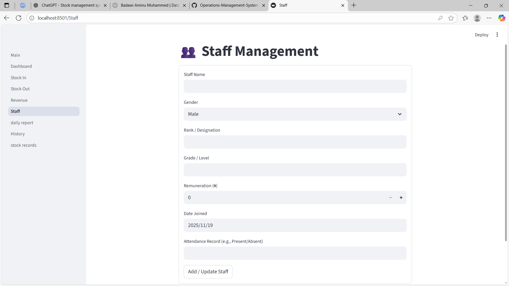
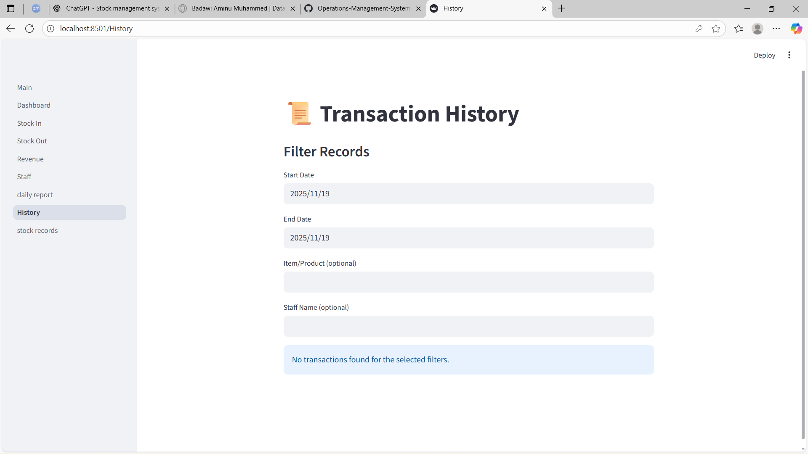
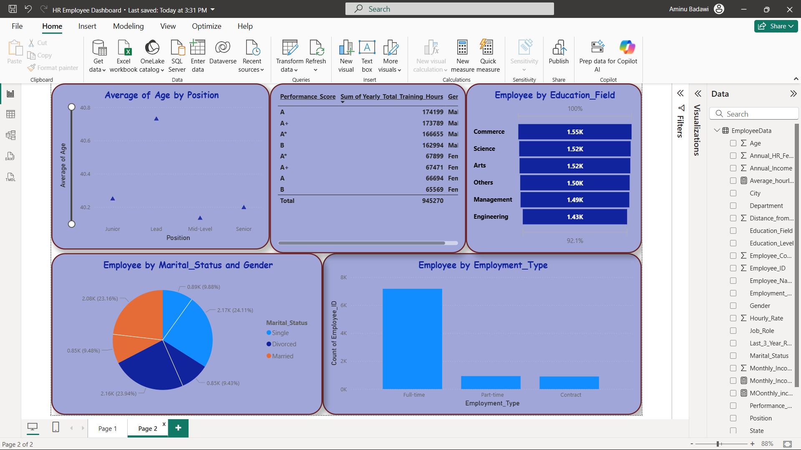

My Work Structure: Methodology Blueprint
This page explains my end-to-end execution model, from stakeholder context to deliverables, with section-based visual placeholders for demonstration.
Back To Summary SectionStakeholder & Context Analysis
I begin by mapping decision owners, delivery teams, beneficiaries, and risk stakeholders to establish accountability and context boundaries.
This ensures technical work aligns with operational realities, policy priorities, and implementation constraints.

Problem Definition
Define the core problem in measurable terms: what decision must be made, what uncertainty exists, and what evidence threshold is required.
I specify scope, assumptions, constraints, and success criteria before selecting analytical methods.

Smart Objectives & KPI Mapping
Goals are translated into SMART objectives and tied directly to KPIs with target thresholds, ownership, and monitoring cadence.
This creates a trackable performance model from strategy to execution.

Analytical and Evaluation Frameworks
I use fit-for-purpose frameworks such as Logic Framework, Theory of Change, CRISP-DM, and adaptive delivery governance.
Framework selection depends on evidence maturity, timeline, and decision sensitivity.

Methodology Design (Workflow Architecture)
This section presents my professional methodology profile across core delivery lenses. It is an explanatory model of how I work, not a viewer-edit workflow generator.
Data Analysis
I structure analytics delivery around diagnostic clarity, evidence rigor, and decision-focused reporting.
Data Quality, Governance & Validation
I enforce data-quality controls, lineage checks, governance standards, and validation protocols to protect decision integrity.
This includes completeness checks, consistency tests, anomaly review, and reproducibility safeguards.

Insights and Communication
Insights are communicated in decision-ready formats: what matters, why it matters, risk implications, and recommended actions.
I tailor output depth for executives, technical teams, and implementation stakeholders.

Deliverables
Typical deliverables include cleaned datasets, validated models, dashboards, strategy briefs, implementation plans, and stakeholder handover documentation.